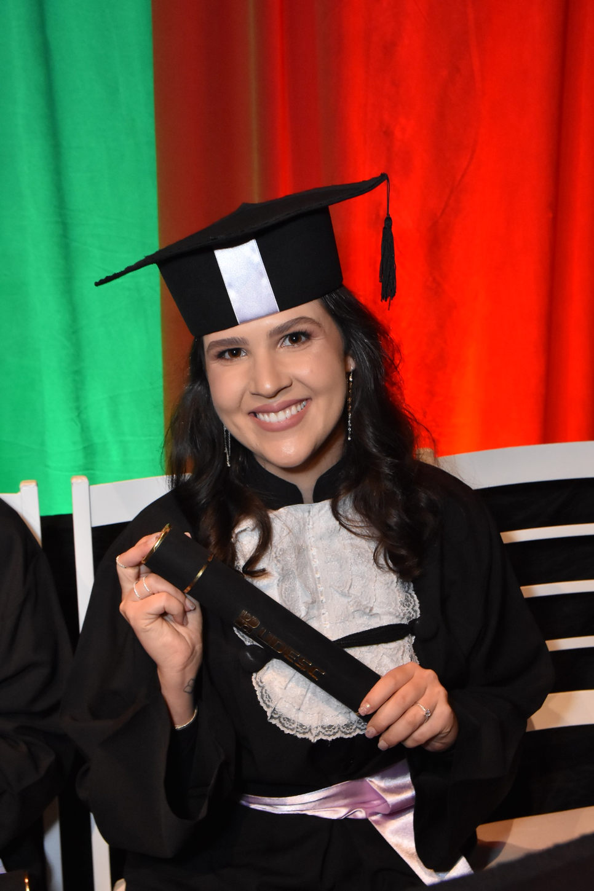

Capítulo 2 · Historicidade
A forma histórico-social articula organismo, trabalho, escolarização, direitos e desigualdades. Nova pergunta: como essa historicidade participa da formação do psiquismo?
Projeto digital autoral · Pesquisa de mestrado em Educação
Plataforma digital autoral vinculada à dissertação de mestrado
Um percurso visual para explorar as perguntas, os fundamentos e as escolhas analíticas da pesquisa.
Ambiente digital de acessibilidade, divulgação científica e exploração dos fundamentos teórico-metodológicos da investigação.
Concepções de adolescência e desenvolvimento humano na produção acadêmica brasileira (2018–2026): mediações históricas, sociais e escolares da Psicologia e da Educação.
Orientadora: Prof.ª Dr.ª Patrícia de Oliveira e Silva Mendes (Currículo Lattes ↗)
Origem acadêmica: Apêndice A da dissertação de qualificação. As 21 pranchas, descrições textuais e remissões permanecem preservadas.
Referência da dissertação: versão de qualificação
TELLES, Taynara Xavier. Concepções de adolescência e desenvolvimento humano na produção acadêmica brasileira (2018–2026): mediações históricas, sociais e escolares da Psicologia e da Educação. 2026. Dissertação (Mestrado em Educação) – Centro de Ciências Humanas e da Educação, Universidade do Estado de Santa Catarina, Florianópolis, 2026.
(Versão apresentada para o exame de qualificação. A publicação integral da versão definitiva ocorrerá após a defesa e os procedimentos institucionais de depósito e validação no Repositório Institucional da UDESC.)
Use o menu ou os atalhos superiores para ir diretamente à introdução, aos capítulos e aos percursos complementares.
Leia o esquema, consulte sua descrição textual e abra os avisos expansíveis para aprofundar a leitura.
Ative a leitura linear ou abra o leitor da dissertação. Para navegar por teclado, use Tab, Enter e Espaço nos controles.
Um ponto de partida para todas as pessoas
Este espaço foi criado para aproximar diferentes leitores de uma pesquisa sobre adolescência, desenvolvimento humano e educação. Você pode começar pelo que desperta sua curiosidade: não é necessário conhecer termos acadêmicos nem ler a dissertação inteira antes de explorar.
Acessibilidade não é reduzir o conhecimento. É ampliar as condições de leitura, percepção, navegação e apropriação de ideias complexas, sem abandonar o rigor da investigação.
Não é obrigatório ler as centenas de páginas da dissertação para começar a compreender a proposta. O Guia oferece caminhos próprios de aproximação; a dissertação permanece a referência para examinar integralmente os argumentos e as evidências.
Explore as 21 pranchas por capítulos, com descrições textuais e explicações.
Explorar as pranchasUse o glossário navegável e siga as remissões para outras seções.
Consultar o glossárioAcesse a edição HTML da dissertação de qualificação, com leitura estruturada.
Abrir dissertação em HTMLVisite os percursos de arte, as fichas biográficas e os espaços de investigação em desenvolvimento.
Explorar autoras e autoresConsulte as opções disponíveis, suas limitações e como participar da melhoria do site.
Abrir página de acessibilidadeConsultar edição portátil · Libras: consultar roteiro e situação do vídeo.
Os recursos de acessibilidade estão em aperfeiçoamento; sua presença não equivale a uma certificação de conformidade. O relato de dificuldades de uso é bem-vindo.
Para tornar visíveis as relações entre o problema investigado, os fundamentos teóricos, a trajetória histórica da adolescência, o corpus documental e os procedimentos de análise; para ampliar as condições de estudo; e para abrir caminhos de interlocução sobre a pesquisa.
O Guia nasceu como Apêndice A da dissertação de mestrado e tornou-se uma plataforma digital autoral complementar, com possibilidades de atualização.
Projeto de Taynara Xavier Telles, vinculado à pesquisa realizada no PPGE/UDESC. Não é publicação oficial da universidade nem substitui a versão definitiva da dissertação depositada institucionalmente.
Espaço de interlocução
Este espaço de interlocução está em atualização. O contato estará disponível futuramente; por enquanto, o ícone apresenta apenas um aviso.
Contato: Em atualização.
Guia Visual da Pesquisa · Edição digital 2026. As atualizações do site devem ser identificadas, preservando a distinção entre a versão de qualificação e os desenvolvimentos posteriores.
Percurso complementar · método e objeto
Não é uma sequência de caixas: as perguntas se transformam, os capítulos acrescentam determinações e o retorno ao problema não conduz ao mesmo ponto de partida. O esquema representa o movimento interpretativo da pesquisa, sem antecipar uma síntese geral do corpus.
Nesta animação, as setas surgem progressivamente: primeiro o encadeamento expositivo; depois, as mediações e os retornos críticos. A contraposição é didática, não uma rejeição da lógica formal.
Ponto de partida: o problema de investigação.
Como a produção acadêmica concebe a adolescência e o desenvolvimento humano? Objeto, problema, objetivos e perspectiva teórico-metodológica.
Como a adolescência se constituiu historicamente?
Como as condições sociais participam da constituição do psiquismo e qual é a função da educação escolar?
Como os estudos constroem suas explicações e que função atribuem às mediações do desenvolvimento?
Retorno ao problema com novas determinações, resultados demonstrados, contradições, limites e questões em aberto.
Fenômeno objetivo: adolescência e desenvolvimento humano como processos histórico-sociais reais.
Objeto específico: concepções, explicações e fundamentos elaborados na produção acadêmica.
A forma histórico-social articula organismo, trabalho, escolarização, direitos e desigualdades. Nova pergunta: como essa historicidade participa da formação do psiquismo?
Atividade, apropriação cultural e transformações psíquicas. Nova pergunta: como essas relações aparecem nas produções acadêmicas?
Reconstrução dos argumentos, Matriz Tripartida e gradação das mediações. Questão: quais respostas são efetivamente sustentadas?
O primeiro movimento parte da introdução e apresenta, numa direção expositiva, a historicização da adolescência, a compreensão do desenvolvimento humano, a análise das concepções acadêmicas e as considerações finais. O segundo movimento torna visíveis relações em múltiplas direções: trabalho, escolarização, direitos, atividade e suas mediações reorientam as perguntas; as considerações finais retornam ao problema inicial, agora interrogado por novas determinações, contradições, limites e questões abertas. O fenômeno real não se confunde com as concepções produzidas sobre ele. Abstrato e concreto pensado são momentos da reconstrução no pensamento, não rótulos fixos para capítulos.
A prancha original destaca Introdução, capítulos 2, 3 e 4 e Considerações Finais. Os capítulos 1 e 5 não desapareceram: seguem no percurso interativo completo, disponível abaixo.
A questão inicial procura compreender como a produção acadêmica concebe a adolescência e o desenvolvimento humano, distinguindo a realidade desses processos dos discursos que os interpretam.
Ver prancha relacionada no GuiaPrecisão teórico-metodológica. A diferença entre uma leitura classificatória e uma reconstrução dialética não equivale à rejeição da lógica formal. O movimento representado é heurístico: não prova, por si só, a apreensão do concreto pensado.
Remissões: Introdução (pranchas 1–3), Capítulo 1 (4–6), Capítulo 2 (7–9), Capítulo 3 (10–12), Capítulo 4 (13–15), Capítulo 5 (16–18) e Capítulo 6 (19–21). Este esquema é complementar às 21 pranchas originais.
A pesquisadora e os caminhos da pesquisa

Retrato da autora durante a formatura: mulher sorrindo, com cabelos escuros, capelo e beca pretos sobre roupa clara, segurando um canudo preto identificado com a sigla UDESC. Ao fundo aparecem faixas verdes e vermelhas.
Pedagoga · Professora dos Anos Iniciais · Mestranda em Educação na UDESC
Antes de investigar a adolescência, percorri os caminhos da escola como estudante e professora. As perguntas que hoje orientam minha pesquisa começaram muito antes de receberem um nome acadêmico.
Cresci em Capinzal, no interior de Santa Catarina. No jardim da casa de minha avó, via crianças seguirem para a escola levando flores às professoras; ali comecei a imaginar a docência. Na escola pública, encontrei uma biblioteca que ainda recordo como minúscula e imensa: suas estantes abriram caminhos entre poemas, palavras e perguntas.

Fotografia antiga, em papel, de Taynara criança, em pé diante de um painel colorido. Ela usa camiseta branca, bermuda azul-escura e sandálias. Ao fundo aparecem personagens infantis com temática rural, uma árvore, flores e peixes sobre uma faixa azul.

Fotografia colorida, feita em um dia ensolarado de agosto de 2026. A avó da autora está em pé ao lado de um canteiro com roseiras, lírios e outras plantas em vasos. Usa vestido escuro com flores azuis e verdes. Ao fundo, aparecem um muro baixo, uma grade e construções do outro lado da rua.
Estudei na escola pública e iniciei uma graduação em Psicologia com bolsa integral do ProUni, percurso posteriormente interrompido. Em Florianópolis, graduei-me em Pedagogia pela Universidade do Estado de Santa Catarina enquanto trabalhava como professora dos quartos e quintos anos do Ensino Fundamental. Hoje curso o mestrado em Educação no PPGE/FAED da UDESC. A experiência docente e a formação universitária, atravessadas por encontros e oportunidades, deram forma a inquietações que se tornaram problemas de pesquisa.

Fotografia aproximada da formatura. O enquadramento destaca os olhos da autora sob um capelo preto, com uma faixa clara no centro. Na frente do rosto, ela segura um canudo preto com a inscrição UDESC em letras douradas. O fundo está desfocado.
Investigo como a produção acadêmica brasileira compreende a adolescência e o desenvolvimento humano, interrogando suas mediações históricas, sociais e escolares. Nessa trajetória, procuro aprofundar meu diálogo com o materialismo histórico-dialético, a Psicologia Histórico-Cultural e a Pedagogia Histórico-Crítica, sem perder de vista as desigualdades que atravessam a escola e as possibilidades de formação humana.
Carrego comigo a lembrança da biblioteca da Escola Municipal Dr. Vilson Pedro Kleinubing e de leituras que me acompanharam desde a infância: Roseana Murray, Pedro Bandeira, Manoel de Barros e Drummond. As memórias do jardim, das professoras e dos livros não explicam sozinhas minha trajetória, mas ajudam a reconhecer as relações e condições que a tornaram possível.
Como nos tornamos quem somos? É uma pergunta que atravessa minha história e que esta pesquisa procura investigar, no plano das concepções científicas, sem oferecer respostas simples ou definitivas.
Texto em primeira pessoa adaptado do prólogo e dos agradecimentos da dissertação de qualificação; não é transcrição literal nem autobiografia independente. Fotografia e gravação com voz da autora dependem de material escolhido ou produzido por ela.
Conheça uma amostra de leitura: apenas o primeiro parágrafo da Introdução e de cada capítulo está disponível para leitura na tela ou em voz sintética. A dissertação completa permanece em desenvolvimento e só será disponibilizada após sua publicação oficial.
Disponibilidade editorial: este espaço é demonstrativo. O texto integral, as referências e demais páginas da dissertação não estão disponibilizados neste Guia antes da publicação oficial. As 21 pranchas seguem acessíveis como material visual complementar.
As descrições independentes já presentes nas 21 pranchas estão reunidas aqui para leitura sequencial ou escuta sintética. Elas são um recurso complementar; o texto integral não está disponível antes da publicação.
Este leitor utiliza voz sintetizada fornecida pelo próprio navegador, quando disponível. Não há envio de texto nem gravação de voz a servidores por este Guia; o mecanismo de voz do dispositivo pode utilizar serviços do sistema operacional. O último ponto de leitura é armazenado apenas neste navegador, com opção de exclusão.
Prancha 1/3 • Guia 1/21 • Remissão: Introdução: formulação do objeto, pp. 20–26
A investigação distingue os processos concretos de desenvolvimento das explicações científicas que deles se produzem.
No centro, o objeto são as concepções científicas, e não a experiência direta dos adolescentes. Corporeidade, organização histórica das idades, conhecimento e escolarização convergem como perguntas. As conexões não indicam que uma dimensão isolada produza as demais.
Esta leitura orienta a compreensão das relações representadas; consulte a prancha e a dissertação para a argumentação completa.
A literatura utilizada na abertura oferece indícios historicamente situados, não comprovação de uma adolescência universal em outras épocas.
Quatro relações envolvem o núcleo das concepções científicas: corporeidade, organização histórica das idades, produção de conhecimento e escolarização. A pesquisa examina como tais relações são explicadas, e não a experiência adolescente diretamente.
Prancha 2/3 • Guia 2/21 • Remissão: Introdução: problema, objetivos e recorte, pp. 26–31
O recorte delimita a produção científica; a conjuntura orienta perguntas, sem determinar antecipadamente as explicações dos autores.
A conjuntura brasileira de 2018 a 2026 delimita o horizonte documental e as perguntas acerca da escola. Políticas, condições sociais e explicações científicas devem ser confrontadas nas fontes: o contexto histórico não demonstra automaticamente que uma mediação foi analisada por cada estudo.
Esta leitura orienta a compreensão das relações representadas; consulte a prancha e a dissertação para a argumentação completa.
A defesa da escola pública é um fundamento pedagógico do trabalho, não uma presunção de que todas as produções partilhem a mesma orientação.
O problema conecta o período de 2018 a 2026 às relações explicativas sobre adolescência, desenvolvimento e escola. A conjuntura e as políticas delimitam perguntas possíveis; sua presença efetiva nas produções exige demonstração documental.
Prancha 3/3 • Guia 3/21 • Remissão: Introdução: organização dos capítulos, pp. 31–35
A sequência expositiva não transforma a teoria em gabarito: a investigação documental pode tensionar e reformular suas perguntas.
Método, reconstrução histórica, fundamentos do desenvolvimento e da educação, corpus e exercício exploratório constituem um percurso relacionado. Os retornos às etapas anteriores indicam revisão de problemas, categorias e evidências, não um circuito fechado com resposta previamente estabelecida.
Esta leitura orienta a compreensão das relações representadas; consulte a prancha e a dissertação para a argumentação completa.
O Guia Visual é apoio à leitura da dissertação, não novo método, pesquisa paralela ou substituto da fundamentação dos capítulos.
A arquitetura relaciona método e história, fundamentos do desenvolvimento e da escola, constituição do corpus e exercício exploratório. As setas são recíprocas: o material documental pode exigir retorno às categorias e hipóteses iniciais.
Prancha 1/3 • Guia 4/21 • Remissão: Cap. 1: seção 1.1
O objeto não é obtido pela soma de características: exige a reconstrução de relações, contradições e mediações concretas.
Cada documento é tomado em sua singularidade e situado nas particularidades históricas brasileiras. A interpretação procura relações mais gerais sem apagar a organização específica do argumento. Totalidade, contradições e mediações são exigências investigativas, não etiquetas aplicadas antes da leitura.
Esta leitura orienta a compreensão das relações representadas; consulte a prancha e a dissertação para a argumentação completa.
O esquema distingue orientação filosófica e operações empíricas: os instrumentos de triagem não equivalem ao método histórico-dialético.
A investigação parte do objeto documental situado em contextos particulares, pergunta pelas mediações constitutivas e reconstrói relações entre universal, particular e singular, sempre sob o controle das fontes.
Prancha 2/3 • Guia 5/21 • Remissão: Cap. 1: seções 1.2–1.3
O documento é tomado em sua lógica argumentativa; metadados e palavras-chave são úteis, mas não dizem por si o que se explica.
A unidade documental é cada artigo, tese ou dissertação, enquanto a unidade de análise é a lógica de sua explicação. O caminho da leitura vai do problema às premissas, aos procedimentos, às evidências e às conclusões, permitindo reconstruir nexos entre eles.
Esta leitura orienta a compreensão das relações representadas; consulte a prancha e a dissertação para a argumentação completa.
A pesquisa é teórico-bibliográfica e documental, de abordagem qualitativa; o quantitativo caracteriza o levantamento, mas não substitui a análise das relações.
Os tipos documentais conectam-se à lógica interna de cada produção. A análise passa pelos argumentos, pelos procedimentos e pelas evidências, preservando a diferença entre descrição de uma população e explicação do desenvolvimento.
Prancha 3/3 • Guia 6/21 • Remissão: Cap. 1: seções 1.3–1.4; ver Cap. 4, seção 4.6
Os acontecimentos situam o período do corpus; sua função explicativa exige ser reconstruída em cada produção.
A delimitação 2018–2026 relaciona mudanças curriculares, condições de escolarização na pandemia, políticas de permanência e proteção. Esses planos compõem o contexto que justifica perguntas às produções, mas as relações efetivamente formuladas exigem verificação em cada documento.
Esta leitura orienta a compreensão das relações representadas; consulte a prancha e a dissertação para a argumentação completa.
A rastreabilidade operacional é detalhada no Capítulo 4; aqui aparece como exigência antecipada da delimitação do objeto.
Quatro campos da conjuntura brasileira se relacionam à delimitação temporal: currículo, pandemia, permanência e proteção. A pesquisa pode perguntar como essas relações aparecem nos documentos, sem atribuí-las previamente a todos eles.
Prancha 1/3 • Guia 7/21 • Remissão: Cap. 2: seção 2.1
As idades são vividas em corpos reais e organizadas em posições sociais historicamente produzidas.
Idade cronológica, transformações orgânicas, posição social e trabalho participam da organização das idades da vida. Nenhum desses planos, separado dos demais, explica universalmente a adolescência; sua articulação muda historicamente.
Esta leitura orienta a compreensão das relações representadas; consulte a prancha e a dissertação para a argumentação completa.
Historicizar o desenvolvimento é investigar condições e formas sociais, não negar processos orgânicos.
A representação aproxima idade contada, transformações do organismo, lugar nas relações sociais e trabalho. Nenhuma dimensão, isoladamente, define uma adolescência universal e invariável.
Prancha 2/3 • Guia 8/21 • Remissão: Cap. 2: seção 2.2 e subseções 2.2.1–2.2.5
A adolescência moderna se configura nas transformações do trabalho, da escolarização e da regulação social das idades.
Transformações do trabalho, organização da família, escolarização e novas instituições participam da constituição moderna de classificações e experiências adolescentes. A figura não apresenta uma linha evolutiva uniforme nem presume que uma experiência europeia seja universal.
Esta leitura orienta a compreensão das relações representadas; consulte a prancha e a dissertação para a argumentação completa.
As obras literárias e científicas examinadas são registros situados; não constituem prova de uma etapa invariável do desenvolvimento.
O conceito de adolescência se constitui em relações entre transformações produtivas, escola, família e instituições. Esses nexos são contraditórios e historicamente desiguais, não uma cadeia causal simples.
Prancha 3/3 • Guia 9/21 • Remissão: Cap. 2: seção 2.3 e subseções 2.3.1–2.3.5
A formação social brasileira não é uma versão tardia de uma história europeia; tem determinações e contradições próprias.
Colonização, escravização, formação de classes, trabalho, direitos e escolarização conformam a particularidade brasileira. O reconhecimento jurídico pode ampliar direitos enquanto a distribuição das condições concretas de formação permanece desigual, constituindo uma tensão histórica.
Esta leitura orienta a compreensão das relações representadas; consulte a prancha e a dissertação para a argumentação completa.
Indicadores quantitativos situam desigualdades; sua interpretação exige as relações históricas que os produzem.
Colonização, classes, trabalho, direitos e escolarização articulam-se na produção desigual das condições de adolescência no Brasil. A escola aparece como mediação contraditória da formação humana.
Prancha 1/3 • Guia 10/21 • Remissão: Cap. 3: seções 3.1–3.2
As funções psíquicas superiores são investigadas em sua formação histórica e social, mediada pela atividade e pela cultura.
A constituição das funções psíquicas superiores envolve relações entre pessoas, uso de signos, atividade e apropriação cultural. O movimento da relação social à reorganização do psiquismo não é transmissão mecânica: envolve atividade singular em condições históricas determinadas.
Esta leitura orienta a compreensão das relações representadas; consulte a prancha e a dissertação para a argumentação completa.
A Psicologia Histórico-Cultural oferece fundamentos para formular perguntas, não um modelo a impor aos textos do corpus.
Relações entre sujeitos, signos, apropriação e funções psíquicas superiores convergem para a compreensão do desenvolvimento como processo histórico-social mediado, sem negar sua materialidade orgânica.
Prancha 2/3 • Guia 11/21 • Remissão: Cap. 3: seções 3.3–3.6
O desenvolvimento adolescente é examinado em suas atividades e nas possibilidades formativas da educação escolar.
Mudanças de motivos, pensamento conceitual e autoconsciência se relacionam às atividades e condições de apropriação cultural. O ensino é uma mediação pedagógica específica, cuja função não se reduz a aplicar categorias psicológicas à sala de aula.
Esta leitura orienta a compreensão das relações representadas; consulte a prancha e a dissertação para a argumentação completa.
Usar as denominações completas Psicologia Histórico-Cultural e Pedagogia Histórico-Crítica quando necessário diferenciá-las.
Motivos, pensamento conceitual e autoconsciência se relacionam à apropriação cultural e às condições de ensino. O trabalho educativo constitui uma mediação própria, não mera aplicação de princípios psicológicos.
Prancha 3/3 • Guia 12/21 • Remissão: Cap. 3: seção 3.7; articulação com 4.5
Os capítulos teóricos preparam perguntas analíticas, mas a reconstrução interna das fontes continua sendo indispensável.
Os fundamentos históricos, psicológicos e pedagógicos não são três listas para classificar documentos. Eles se transformam em perguntas dirigidas à lógica interna dos trabalhos; as respostas documentais podem exigir reformulação das perguntas iniciais.
Esta leitura orienta a compreensão das relações representadas; consulte a prancha e a dissertação para a argumentação completa.
Não confundir a articulação de diferentes fundamentos com uma classificação prévia das pesquisas alheias.
Historicidade, psicologia, educação escolar e evidências convergem em perguntas sobre cada produção. O confronto com a lógica interna do estudo retroage sobre as categorias teóricas do próprio instrumento.
Prancha 1/3 • Guia 13/21 • Remissão: Cap. 4: seções 4.1–4.4; Tabelas 1–2
A contagem distingue ocorrências de consultas, documentos únicos e registros encaminhados à avaliação integral.
Busca, deduplicação, recorte temporal e triagem compõem operações distintas. A sequência de registros brutos para documentos únicos e leitura integral não equivale ao conjunto definitivamente elegível. Os quantitativos do levantamento original e do subconjunto temporal não devem ser confundidos.
Esta leitura orienta a compreensão das relações representadas; consulte a prancha e a dissertação para a argumentação completa.
Tabela 2: “encaminhados à avaliação integral” não equivale a confirmação de elegibilidade. A rastreabilidade preserva decisões e versões do levantamento.
Quatro componentes se relacionam: buscas, deduplicação, recorte temporal e atualização documental. O levantamento original de 2017 a 2025 e o subconjunto de 2018 a 2025 possuem totais distintos e não equivalem ao corpus final elegível.
Prancha 2/3 • Guia 14/21 • Remissão: Cap. 4: seções 4.5.1–4.5.4; Quadros 5–6
A matriz interroga a função explicativa das relações em cada produção, sem atribuir uma nota de qualidade aos pesquisadores.
A lógica interna de cada documento ocupa o centro. A dimensão epistemológico-metodológica pergunta como o objeto é construído; a ontológico-psicológica interroga o desenvolvimento; e a pedagógico-político-educacional examina a função da escola e das condições educativas. Evidências sustentam registros E, M, I, NI e A; T indica tensão documentada, sem escala de pontuação. A investigação pode retornar de uma dimensão a outra.
Esta leitura orienta a compreensão das relações representadas; consulte a prancha e a dissertação para a argumentação completa.
Registrar a passagem textual e sua localização, distinguindo proposições atribuídas ao autor das inferências produzidas pela pesquisadora.
As três dimensões interrogam reciprocamente a lógica interna de cada produção. Evidências e justificativas sustentam estados qualitativos E, M, I, NI e A, com T como marcador transversal, sem pontuação ou hierarquia automática.
Prancha 3/3 • Guia 15/21 • Remissão: Cap. 4: seções 4.5.2–4.6; Quadros 3–10
Os movimentos são diferenciáveis para fins de controle, mas podem ser retomados quando o exame documental revela novas relações.
Os cinco movimentos são reconstrução interna, interrogação analítica, registro das mediações, confronto crítico e síntese provisória. As setas de retorno representam revisões fundamentadas diante das fontes, e não etapas lineares obrigatoriamente concluídas de uma só vez.
Esta leitura orienta a compreensão das relações representadas; consulte a prancha e a dissertação para a argumentação completa.
A matriz deve poder ser aperfeiçoada diante de produções heterogêneas, sem enquadrar toda pesquisa em categorias impostas.
O esquema associa reconstrução, interrogação, registro, confronto e síntese em movimento reversível. O retorno às fontes e às perguntas constitui parte da análise, não falha procedimental.
Prancha 1/3 • Guia 16/21 • Remissão: Cap. 5: seções 5.1–5.2; Quadro 11
Duas dissertações de 2018 com objetos distintos permitem testar perguntas comuns, preservando a singularidade de cada argumento.
Soares e Bueno são estudos distintos. Em Soares, a análise interroga escolha profissional e condições sociais e escolares; em Bueno, a formação de uma prática curricular de educação sexual. As mesmas dimensões permitem perguntas comparáveis, mas a singularidade de cada estudo permanece central.
Esta leitura orienta a compreensão das relações representadas; consulte a prancha e a dissertação para a argumentação completa.
O estatuto da análise é exploratório: demonstra aplicações localizadas, não representatividade do corpus total.
Duas dissertações se conectam a perguntas sobre concepções e mediações: uma investiga a escolha profissional, outra a constituição institucional de uma prática pedagógica. A comparação parte de suas singularidades.
Prancha 2/3 • Guia 17/21 • Remissão: Cap. 5: seções 5.3–5.4; Quadros 12–14
Uma mediação interessa pelo papel que cumpre no argumento, não apenas por constar como palavra ou informação contextual.
Excertos e proposições dos autores fundamentam os registros das relações. Uma condição escolar pode aparecer como contexto, alternativa objetiva ou mediação explicativa; essa função não é deduzida da mera presença de uma palavra. As inferências da pesquisadora devem ser identificadas separadamente.
Esta leitura orienta a compreensão das relações representadas; consulte a prancha e a dissertação para a argumentação completa.
O Quadro 14 rastreia movimentos analíticos de evidências particulares; não oferece nota de classificação das duas pesquisas.
Os registros contrapõem dados, suas funções argumentativas e os limites de inferência: uma condição escolar pode ser contexto, alternativa concreta ou mediação explicativa, a depender da fonte.
Prancha 3/3 • Guia 18/21 • Remissão: Cap. 5: seção 5.5
O confronto inicial mostra possibilidades e limites da matriz; sua aplicação ampla dependerá de mais documentos e revisões fundamentadas.
As reconstruções dos dois estudos permitem comparar questões e limites do instrumento, sem produzir tendências nacionais. A ampliação do corpus deve retroalimentar a sensibilidade da matriz, seus registros e a pertinência das perguntas.
Esta leitura orienta a compreensão das relações representadas; consulte a prancha e a dissertação para a argumentação completa.
Agrupamentos futuros dependem das relações explicativas reconstruídas; não podem decorrer da contagem de termos ou da soma dos estados de mediação.
O confronto entre dois estudos produz sínteses individualizadas e questões comparáveis, mas não tendências gerais. A ampliação do corpus deve retroalimentar a revisão de perguntas e critérios.
Prancha 1/3 • Guia 19/21 • Remissão: Cap. 6: considerações finais, abertura
A dissertação reconhece resultados parciais, operações inconclusas e o caráter formativo de sua própria elaboração.
Fundamentação histórica, estudo psicológico-pedagógico, constituição documental e matriz não estão no mesmo estágio de desenvolvimento. A unidade alcançada é processual: o exame da banca pode modificar escolhas e prioridades da continuidade da investigação.
Esta leitura orienta a compreensão das relações representadas; consulte a prancha e a dissertação para a argumentação completa.
Este capítulo é reflexivo e provisório, não contém uma síntese conclusiva nacional sobre as concepções de adolescência.
Quatro elementos da pesquisa (fundamentos históricos, psicológicos, corpus e matriz) possuem graus distintos de elaboração. Sua unidade é processual e permanece aberta à qualificação e à revisão.
Prancha 2/3 • Guia 20/21 • Remissão: Cap. 6; articulação com seções 4.5–4.6 e 5.5
O rigor exige ouvir os documentos em seus próprios termos, justificar interpretações e reconhecer limites da própria pesquisa.
A relação entre escuta da lógica interna, evidência documental, distinção de autoria e confronto crítico limita a interpretação. Referenciais não substituem exame do objeto e tensões entre proposições não são convertidas automaticamente em contradições dialéticas.
Esta leitura orienta a compreensão das relações representadas; consulte a prancha e a dissertação para a argumentação completa.
O confronto crítico não é um julgamento moral dos pares nem um teste de fidelidade à Psicologia Histórico-Cultural.
No centro está a responsabilidade do confronto: escuta do objeto particular, evidência verificável, distinção de autoria e possibilidade de revisão das questões. As quatro dimensões limitam reciprocamente a interpretação.
Prancha 3/3 • Guia 21/21 • Remissão: Cap. 6: continuidade e horizontes investigativos
A continuidade investigativa depende de aprofundar simultaneamente o corpus, os registros e a força explicativa das análises.
A continuidade articula duas frentes: completar a constituição do universo documental e aprofundar a aplicação controlada da matriz. O acréscimo de documentos não basta por si; novas evidências podem exigir revisão dos critérios e das categorias e produzir uma síntese mais determinada.
Esta leitura orienta a compreensão das relações representadas; consulte a prancha e a dissertação para a argumentação completa.
Não confundir horizonte investigativo com resultados garantidos nem prometer aplicação automática a todo o levantamento.
O percurso continua em duas direções articuladas: constituição do corpus e aprofundamento do procedimento analítico. A ampliação documental deve produzir novas perguntas e justificar revisões, não apenas aumentar contagens.
Curadoria em desenvolvimento
Um percurso para conhecer formas pelas quais adolescentes criaram, foram representados e se apropriaram de produções artísticas. Esta seção complementa a reflexão histórica: as obras não integram automaticamente o corpus de teses e dissertações analisado pela pesquisa.
Investigue representações históricas das idades da vida e, separadamente, criações de adolescentes. Cada ficha apresenta procedência institucional, pergunta crítica e limite de interpretação. A seleção não pretende esgotar as possibilidades da arte e permanece aberta à ampliação.
Abrir a curadoria «Quem pôde representar a adolescência? E quem pôde representar o mundo?»
As obras podem ser consultadas nos acervos originais. Reproduções de imagens e textos dependem de verificação de licença ou autorização.
Romance que permite interrogar a experiência escolar, a disciplina e as relações de poder na formação de um jovem.
Imagem e reprodução dependem de verificação de direitos e procedência.
Narrativa que coloca em cena infâncias e juventudes marcadas por desigualdade, vida nas ruas e disputas por reconhecimento.
Imagem e reprodução dependem de verificação de direitos e procedência.
Escrita de uma adolescente em contexto de perseguição nazista; uma possibilidade de discutir autoria juvenil e mediações históricas extremas.
Imagem e reprodução dependem de verificação de direitos e procedência.
Que possibilidades de expressão encontram os próprios adolescentes? Esta pergunta convida a observar suas produções culturais e as condições de circulação e reconhecimento.
Questões de leitura: quem representa a adolescência? Quais experiências e desigualdades aparecem? Quando os adolescentes são autores de suas próprias narrativas?
Links para acervos e imagens hospedadas fora do Guia exigem internet. Para consulta offline, use uma cópia local que inclua as páginas necessárias.